Towards an Adaptable Systems Architecture for Memory Tiering at Warehouse-Scale
This page was written by an AI model to give a high-level overview of the paper. Please check the paper for detail: ACM Digital Library.
DRAM is an increasingly large and fast-growing share of infrastructure spend in warehouse-scale computing (WSC), growing faster than CPU or storage, and some estimates suggest it may become the binding constraint on cost-effective compute capacity. The paper explores replacing part of a machine's DRAM (tier1) with a cheaper, slower secondary memory (tier2), while keeping both tiers directly addressable and cacheable by the CPU. That design point is distinct from both conventional virtual memory and swap, which page a much smaller physical memory out to a much larger, much slower backing store or remote resource, and from zswap, whose backing store is compressed DRAM: in TMTS, tier2 is real physical memory the CPU accesses without a page fault.
Existing options fall short of this goal. Intel Optane's "memory mode" implements tiering entirely in hardware, leaving software no room to customize policy per application. Fault-based far-memory systems such as zswap promote a page only after a page fault, which stalls the faulting instruction for microseconds, unacceptable on the critical path of latency-sensitive production services. Prior OS-managed tiered memory research (Thermostat, Nimble, HeteroOS, AutoTiering, HeMem, and others) is evaluated in simulation or with emulated tier2 media on small testbeds, not validated against the scale, multi-tenancy, and workload diversity of a real WSC fleet.
TMTS (Transparent Memory Tiering System) is Google's production answer: an application-transparent, non-faulting two-tier memory architecture built around two proxy metrics the authors define specifically to make the optimization tractable at fleet scale. Secondary Tier Residency Ratio (STRR) is the fraction of allocated memory resident in tier2, a proxy for capacity utilization. Secondary Tier Access Ratio (STAR) is the fraction of memory accesses directed at tier2 pages, a proxy for performance degradation. The deployment goal is to keep STRR near the provisioned tier2 capacity fraction (25%) while keeping STAR low enough that aggregate performance degradation stays under 5%.
A four-layer architecture separates concerns. Hardware exposes tier2 as a NUMA node. An in-kernel page access-bit (A-bit) scanner and PMU-based sampling of tier2 last-level-cache misses detect cold pages to demote and newly hot pages to promote, both without page faults. A userspace daemon (ufard) sets per-application policy, such as the cold-age threshold, that the kernel mechanism enforces via cgroup parameters and BPF ring buffers. The Borg cluster scheduler layers tiering-aware job placement on top, using offline-classified "friendly"/"unfriendly" hints and live feedback from the node agent (Borglet).
Deployed for nearly two years across six clusters (2200 experimental vs. 1000 control servers, over 100K distinct production jobs, roughly a quarter HILS), TMTS keeps median STAR below 0.5% and p95 STAR within 1.5% while STRR tracks the 25% target, meeting the <5% aggregate performance degradation goal (median IPC impact 2.3% in one study, 3.5% in a larger 1000-machine study). Cold memory coverage in tier2 averages 75% across clusters. These are population-level production results across a highly diverse workload mix, not isolated benchmarks.
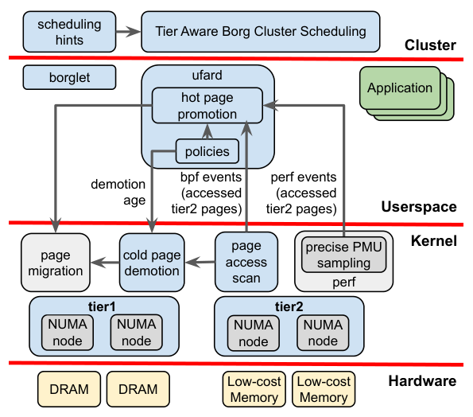
Key takeaways
- TMTS replaces 25% of DRAM with Optane-class tier2 memory, directly addressable without faults, in a production WSC fleet for about two years with under 5% aggregate performance impact.
- Two proxy metrics, STRR (tier2 capacity utilization) and STAR (tier2 access ratio), let the system be tuned and monitored at fleet scale instead of relying only on noisy end-to-end performance numbers.
- Cold-page demotion uses per-application-class age thresholds (ufard plus a kernel A-bit scanner); hot-page promotion combines periodic A-bit scanning with PMU-based sampling of tier2 last-level-cache misses for fast, fault-free detection.
- Hardware limits (constrained tier2 bandwidth, a shared memory channel with DRAM, weaker cross-socket QoS) force two policy restrictions: no direct allocation into tier2, and no demotion to a remote socket's tier2 ("NUMA jailing"); disabling the latter caused severe tail DRAM latency and production soft lockups.
- Hugepages interact badly with page-granularity tiering: a small hot region keeps a 2 MB page pinned in tier1, or a mostly-cold hugepage never gets split and demoted. Allocator hints and tiering-aware scheduling close much of this gap.
From a cost problem to a deployed tiering stack
The warehouse-scale context, the metrics that make the problem tractable, the architecture's four layers, and the mechanisms each layer uses.
1 · Warehouse-scale context and application classes
The deployment runs on a global fleet of clusters managed by the Borg scheduler, which packs many heterogeneous jobs per machine to maximize utilization while meeting service level objectives (SLOs). Services fall into two classes relevant to tiering: HILS (high-importance latency-sensitive: user-facing services, caches on the critical path of other HILS services, and some data-processing tasks) and non-HILS (throughput-oriented batch and ML training, with weaker SLOs). The two classes are routinely co-located on the same machine.
Memory is provisioned conservatively because running out of memory (OOM) is far more disruptive than running out of CPU, so machines typically carry substantial memory that sits cold for long stretches. That slack is what tiering exploits: moving infrequently accessed memory to a cheaper tier2 recovers cost without materially affecting applications, provided the system can reliably tell cold memory from hot.
2 · The tiering objective: STAR and STRR
Because multi-tenancy, multiple resource dimensions, and time-varying workload mix make raw utilization and raw performance numbers too noisy to directly optimize, the paper defines two proxy metrics tied to the tiering mechanism itself. STRR is the fraction of allocated memory resident in tier2; keeping it near the deployed tier2 capacity ratio (25%) maximizes effective capacity without starving tier1. STAR is the fraction of memory accesses landing on tier2 pages; keeping it low bounds performance degradation. Both proxies are measured only on machines above 75% median / 90% p95 memory utilization, since at low utilization both metrics trivially go to zero by keeping everything in tier1.
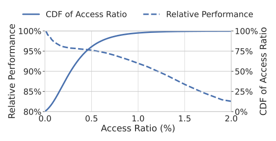
Empirically, aggregate performance degradation stays under 5% specifically when STAR is held below about 0.5%, and the tier2 access ratio stays below 1% at the socket level in more than 99% of observed instances. This recasts the system objective precisely: keep median STAR under 0.5% and p95 STAR within 1.5% while STRR approaches 25% whenever memory utilization is high. Results that validate this target appear in the Evaluation tab.
3 · Base architecture: four cooperating layers
- Hardware. Linux enumerates tier2 devices (a variant of Intel Optane Persistent Memory) as NUMA memory nodes; TMTS defines a tiered hierarchy over these nodes, extensible beyond two tiers or to other media such as CXL-attached memory.
- Kernel mechanism. An extended A-bit page scanner tracks page idle age (for demotion) and page "hot age" (for promotion), and performs the actual page migration using existing NUMA migration machinery, without page faults.
- Userspace policy (ufard). A daemon sets per-application demotion and promotion parameters via cgroups, reads cold-age histograms and PMU-sampled tier2 access events via a small BPF program, and issues promotions through a custom system call.
- Cluster scheduling (Borg/Borglet). The node agent protects per-machine SLOs under the local tier2 hardware's constraints; the cluster scheduler uses tiering-aware placement hints to improve fleet-wide cold-memory identification (Section 6 of this tab covers mechanism; results are in the Evaluation tab).
4 · Cold page detection and demotion
A page is classified cold with threshold t if it has not been accessed in the prior t seconds. Because applications in this environment rely on distributed storage rather than file-backed memory, over 98% of pages are swap-backed (anonymous or tmpfs), and only swap-backed pages are treated as demotion candidates.
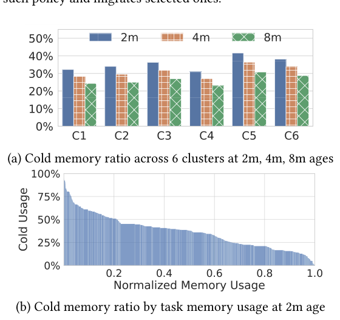
ufard conveys the demotion policy by writing a cold-age threshold into each task's cgroup; the kernel uses this value during its periodic scan to select pages to demote, and in turn exposes a cold-age histogram back to ufard so the policy can be adjusted. To avoid bursty demotions that consume scarce tier2 bandwidth and interfere with co-located HILS tasks, the system prefers to throttle or evict non-HILS tasks rather than let demotion traffic degrade latency-sensitive neighbors.
5 · Hot page promotion without faults
Promotion has no natural trigger analogous to a page fault, since tier2 is directly accessible. Promoting on first access would also be counterproductive for the many pages that are accessed only rarely. TMTS instead uses two complementary signals. Precise event-based sampling (PEBS on the deployed Intel hardware) captures a filtered 1% of last-level-cache miss loads sourced from tier2 and promotes every page identified this way; stores cannot be filtered this way in the deployed hardware, so only loads are sampled. In parallel, the extended A-bit scanner runs every 30 seconds and tracks how many consecutive scan periods a page has been touched; the base policy promotes a page touched in two or more consecutive periods. Combining PMU sampling with scanning detects newly hot pages far faster than scanning alone, which matters because the penalty for mischaracterizing a page as cold is much larger here than in ordinary NUMA migration.
6 · Policy management and the kernel/userspace split
A deliberate design choice puts policy in userspace and mechanism in the kernel. ufard uses the standard Linux perf_event_open() interface for PMU sampling and installs a small BPF program to collect tier2 hot-page ages and addresses from the in-kernel scanner into per-NUMA-node ring buffers efficiently. The paper's stated rationale is that effective kernel mechanisms require many design iterations driven by subtleties only visible at production scale, and a userspace policy layer gives the flexibility and development velocity to iterate on policy without kernel changes.
7 · Hardware constraints and resulting restrictions
The deployed tier2 DIMMs have much lower bandwidth than a DDR4 channel, and in this hardware generation they share a memory channel with DRAM DIMMs, so tier2 bandwidth saturation also degrades regular DRAM latency.
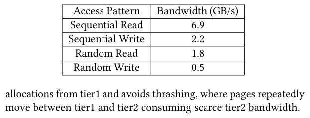
Given measured idle read latency of about 325 ns and the bandwidth figures above, together with the observed cold-page profile and available DIMM capacity, the deployment targets 25% of system memory in tier2. Two policy restrictions follow directly from the hardware rather than from TMTS's design: (1) no direct allocation into tier2, since a freshly allocated page has no access history and might be immediately hot, so all allocations start in tier1 and only demotion populates tier2; (2) no demotion to a remote socket's tier2, because the memory controller's QoS feedback that throttles tier2 bandwidth demand is far less effective across sockets. The paper treats both as artifacts of the current hardware, likely to relax with future tier2 implementations.
8 · Production deployment and evaluation methodology
TMTS has run in production for nearly two years. The evaluation methodology uses a large-scale A/B design: 2200 experimental (2-tier) servers and 1000 control (all-DDR4, same total capacity) servers spread across six geographically distributed clusters, serving hundreds of thousands of production services daily. The Borg scheduler places jobs identically on both groups, with no experiment-specific scheduling policy, and causality is established by comparing task replicas of the same service running on experimental versus control machines. Studies typically run about four weeks for statistical power given workload diversity, with a 5% controlled false-positive rate. The results of this methodology, and of the policy variants built on it, are covered in the Evaluation tab.
Evaluation
The production A/B study, its key figures in the paper's order, and what each one shows about whether TMTS meets its goal.
The study is a live A/B deployment, not a standalone benchmark suite: experimental and control machines run the same mix of real production jobs under the same Borg scheduling policy, and task replicas of the same service on each group are compared directly.
| What | Value in the paper |
|---|---|
| Platform | 2-socket Intel Xeon servers; DDR4 as tier1; a variant of Intel Optane Persistent Memory as tier2; experimental machines run 75% tier1 / 25% tier2 capacity, control machines run the same total capacity as all-DDR4 |
| Deployment scale | 2200 experimental and 1000 control servers across 6 clusters, nearly two years in production |
| Workloads | Over 100K distinct jobs (~1/4 HILS); >1M HILS and 330M non-HILS application instances; 70% of HILS and 90% of non-HILS have sufficient control/experimental coverage for comparison |
| Baselines | 1-tier (all-DDR4) control machines; task replicas of the same service matched across experimental and control groups |
| Metrics | STAR, STRR, cold-memory coverage, IPC difference vs. control, TLB miss rate, hugepage coverage, DRAM access latency |
Task capacity is preserved: 2-tier and 1-tier machines reach the same memory utilization
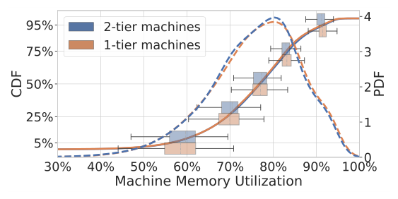
What it shows. PDF, CDF, and time-windowed percentile box plots of memory utilization for 2-tier (experimental) and 1-tier (control) machines over the full study. Both distributions average 75%, with P50 at 77%, mode at 80%, and P95 at 91%. Across time windows, P50 itself varies between 70% and 83% for 1-tier machines. At lower utilization strata, 2-tier machines show slightly higher utilization and lower variance than 1-tier; at the P90 strata, 2-tier is slightly lower than 1-tier, though both stay well above 80%.
What to take from it. If tiering had materially hurt performance, Borg would have scheduled fewer tasks onto 2-tier machines, lowering their memory and CPU utilization relative to 1-tier. The near-identical distributions (corroborated by matching CPU utilization and task-count trends) indicate that the same effective task capacity is maintained with 25% of DRAM replaced.
Tier2 residency tracks the 25% target, and covers most of the available cold memory
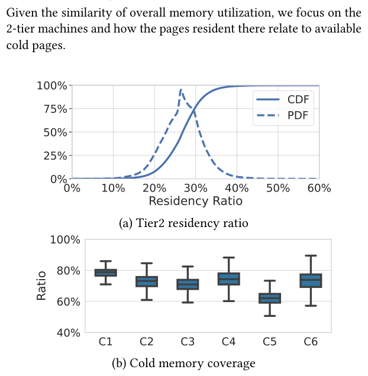
What it shows. (a) STRR distribution on 2-tier machines: mode, mean, and median sit slightly above the 25% deployed capacity ratio, with P10-P90 ranging between 20% and 35%. (b) Cold memory coverage, the fraction of 2-minute-cold pages actually resident in tier2, is consistently above 50% and averages 75% across the six clusters, against an observed cold-page population of 28-42% of total address space.
What to take from it. The promotion/demotion policy closely tracks the deployed hardware ratio rather than under- or over-using tier2, and it captures a large majority of the memory that is genuinely available to tier without needing to touch near all of it, a notably higher coverage than reported for swap-based far-memory systems.
Tier2 access stays low, and aggregate performance impact meets the under-5% target
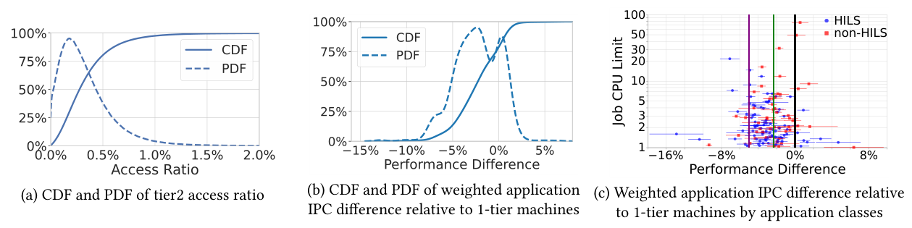
What it shows. (a) CDF/PDF of STAR on 2-tier machines: median 0.3%, P95 under 1%, with a tail reaching 2% (the measured congestion limit for this tier2 hardware is around STAR 1.5%). (b) CDF/PDF of weighted application IPC difference relative to 1-tier controls: median impact 2.3%, P5 about 7%; the distribution is bimodal with spread from -5% to +2%, and the apparent 2% "improvement" tail has 0 within its confidence interval, indicating noise rather than a real speedup. (c) Per-application IPC difference for the largest jobs (half of total compute usage), split by HILS/non-HILS, each with a 95% confidence interval, against a -5% performance target line and a -2.3% aggregate weighted-impact line.
What to take from it. Both proxy metrics and the end-to-end IPC metric agree: the deployed policy meets the under-5% aggregate degradation goal at the median, though individual jobs show substantial variance, consistent with the extreme workload diversity the fleet's prior scheduling literature documents. Tail performance variability for HILS jobs specifically motivates the adaptive and scheduling policies covered later.
At larger scale, aggregate impact is 3.5%, with TLB and DRAM-latency effects pinpointed
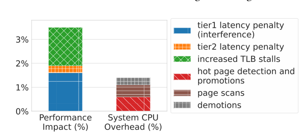
What it shows. A breakdown of aggregate performance impact and system overhead on 1000 2-tier machines over a separate 4-week study, totaling 3.5% degradation. Of this, DRAM latency increase (from the tier2 DIMM controller's buffer stalling the shared memory channel when full) contributes 1.5% impact; increased TLB misses from reduced hugepage coverage, 30% on 2-tier versus 45% on 1-tier machines (a 7% increase in TLB misses on 2-tier), contribute another roughly 1.5%; the direct L3-cache-miss latency penalty to tier2 (3.5x a normal miss) is kept low by migration; and the three kernel-level mechanisms (demotion, scanning, promotion) add about 1% system overhead.
What to take from it. The larger, longer study shows a somewhat higher impact than the smaller study in Result 3, which the paper attributes to expected variation rather than a different regime, and it localizes the dominant costs to DRAM fragmentation reducing hugepage coverage and to the shared-channel latency penalty, rather than to the tiering logic itself. Two mitigations tested elsewhere (migrating hugepages intact, and more aggressive memory compaction) each recovered about 0.5% performance.
A per-application-class demotion threshold fixes the HILS access-ratio tail
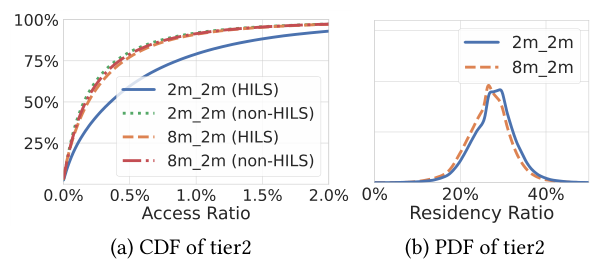
What it shows. CDF and PDF of STAR comparing a uniform 2-minute demotion age for all classes (2m_2m) against an 8-minute threshold for HILS with 2 minutes for non-HILS (8m_2m). Under 2m_2m, HILS STAR crosses the 1.5% congestion threshold as early as P80, while few non-HILS jobs reach that level. Under 8m_2m, HILS STAR falls to be on par with non-HILS and within the target range: median STAR drops 46% (0.35% to 0.19%) and P95 drops 39% (2.35% to 1.43%). STRR for HILS decreases only slightly, about 1.1% at the median.
What to take from it. A single global demotion-age threshold is too aggressive for latency-sensitive applications; a simple, application-class-specific threshold is enough to bring HILS performance risk within target while still demoting sufficient cold memory, without needing a more complex adaptive policy for this particular axis.
Remote-socket demotion causes severe DRAM tail latency and was rolled back in days
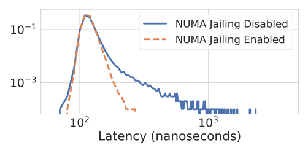
What it shows. A PDF of tier1 DRAM access latency (in nanoseconds) under NUMA jailing enabled (no remote-socket tier2 demotion, the deployed policy) versus disabled on 300 experimental machines in one cluster. Median DRAM latency is roughly similar between the two policies, but tail latency is elevated by orders of magnitude when remote-socket demotion is permitted.
What to take from it. Cross-socket memory-controller QoS feedback that normally throttles tier2 bandwidth demand is far less effective when the feedback signal must cross sockets. The effect was severe enough to cause a significant rise in kernel soft lockups in production, and the team rolled back the no-jailing configuration within days; this is presented as direct evidence for the hardware-driven policy restriction in the How It Works tab.
Two case studies span the range from tiering-friendly to tiering-unfriendly
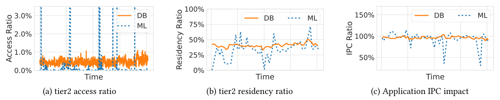
What it shows. One week of time-series STAR, STRR, and IPC impact for task replicas of two applications across experimental and control machines in one cluster. Spanner, a distributed-database HILS service whose memory is dominated by rarely-accessed cache entries, holds a consistently low STAR around 0.5% (within target), tolerates a higher-than-expected STRR (>25%), and sees average IPC impact of 2.5% with tail impact of 4.5%, both below the aggregate HILS impact. A TensorFlow-based ML training pipeline, with bandwidth-intensive and unpredictable access patterns, shows an elevated and highly variable STAR, IPC impact sometimes as high as 50% degradation, and STRR swinging from 0% to over 50%.
What to take from it. The same tiering mechanism produces very different outcomes depending on an application's access-pattern stability, not just its average memory footprint. The ML pipeline alone contributed to over 80% of severe tier2 bandwidth-saturation events on experimental machines, making it a "noisy neighbor" and motivating the tiering-aware scheduling classification covered next.
Tiering-aware scheduling hints reduce STAR by 30% and improve HILS performance by 4%
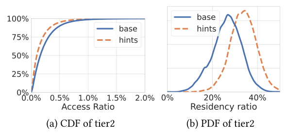
What it shows. CDF and PDF of STAR on 600 machines in one cluster, comparing Borg scheduling with and without offline-computed "tiering-friendly"/"tiering-unfriendly"/"neutral" job classification hints (an average of about 20% of jobs classified friendly and 17% unfriendly per cluster, with the exact split varying by cluster).
What to take from it. Steering tiering-friendly jobs toward 2-tier machines and unfriendly jobs away from them, even as a best-effort hint that can be overridden by stronger scheduling constraints, reduces STAR by about 30% and improves measured performance for latency-sensitive workloads by about 4% relative to 2-tier machines without the hints, extending the per-machine demotion/promotion policy with a cluster-level lever.
FAQ
Q·What problem is TMTS actually solving?▾
DRAM is becoming an outsized and fast-growing share of data center hardware cost. TMTS lets Google replace 25% of a server's DRAM with a cheaper but slower memory (a variant of Intel Optane) while keeping both tiers directly accessible by the CPU, instead of paying full DRAM cost for memory that sits mostly idle.
Q·How is this different from swap-based far memory like zswap?▾
Swap and zswap use the page fault as the trigger: a page is paged out, and accessing it again faults, stalling the instruction for the fault-handling time. In TMTS, tier2 memory is directly addressable; reading or writing a tier2 page never faults, it just costs a higher-latency, lower-bandwidth memory access. Promotion and demotion both happen proactively in the background based on observed access patterns, not reactively on a fault.
Q·How is this different from Intel Optane "Memory Mode"?▾
Memory Mode implements the DRAM/Optane split entirely in hardware, with DRAM acting as a cache in front of a larger Optane pool and no software visibility into or control over placement decisions. TMTS instead makes both tiers part of the OS-managed physical address space and lets a userspace policy layer customize demotion and promotion per application class, which Memory Mode cannot do.
Q·Why define STAR and STRR instead of just measuring end-to-end performance?▾
End-to-end metrics like IPC are noisy at warehouse scale because of multi-tenancy, multiple contended resources, and workload variation unrelated to tiering. STAR (fraction of accesses hitting tier2) and STRR (fraction of memory resident in tier2) are proxies computed directly from the tiering mechanism, so they can be tracked and tuned per machine and per application even when the end-to-end signal is too noisy to act on quickly.
Q·How does the kernel detect hot pages without page faults?▾
Two mechanisms run in parallel: a periodic scan of each page's access bit, which flags a page as hot once it has been touched in two or more consecutive 30-second scan periods, and hardware performance-monitor sampling (PEBS) of last-level-cache misses that resolve to tier2, which catches newly hot pages almost immediately. The combination trades some extra CPU overhead for much faster detection than scanning alone.
Q·Why not promote a tier2 page the moment it's first accessed?▾
Many tier2 pages are accessed only rarely, so promoting on first touch would waste tier1 capacity and migration bandwidth on pages that go cold again immediately. Repeated accesses over a short interval are a much stronger signal that a page has genuinely become hot, so TMTS waits for that stronger signal before migrating it back to tier1.
Q·Why can't a task's memory be demoted to a remote socket's tier2 memory?▾
The memory controller's quality-of-service throttling, which protects DRAM latency when tier2 bandwidth demand is high, relies on fast feedback to the requesting CPU core. That feedback is much less effective when it has to cross between sockets, so TMTS only demotes a task's memory to tier2 DIMMs on the socket where the task is actually running.
Q·What actually went wrong when this restriction was disabled?▾
In an experiment on 300 machines, disabling the no-remote-socket-demotion policy left median DRAM latency roughly unchanged but caused tail DRAM access latency to rise by orders of magnitude, severe enough to trigger a noticeable increase in kernel soft lockups. The team rolled the configuration back within days to avoid impacting production services.
Q·Why do hugepages make tiering harder?▾
Tiering decisions are made at page granularity. If a 2 MB hugepage mixes a small hot region with mostly cold data, the whole page looks hot and never gets demoted, or if it does demote, migrating it incurs costly TLB invalidation and a mix of needed and unneeded data movement. TMTS splits candidate hugepages into 4 KB pages before demoting them, at the cost of reduced hugepage coverage (and more TLB misses) on 2-tier machines.
Q·What's the difference between a "tiering-friendly" and "tiering-unfriendly" job?▾
An offline pipeline analyzes a job's historical tier2 usage ratio and tier2 bandwidth usage. Jobs with substantial, stable cold memory and modest tier2 bandwidth needs are tagged friendly and preferentially scheduled onto 2-tier machines; jobs that are noisy neighbors on tier2 bandwidth or extremely latency-sensitive are tagged unfriendly and preferentially kept off 2-tier machines. Everything else is neutral and uses the ordinary scheduling policy.
Q·Did every application benefit equally from TMTS?▾
No. The paper's two case studies show the spread directly: Spanner, a cache-heavy database, saw a stable, low tier2 access ratio and modest (2.5% average) performance impact, while a bandwidth-intensive ML training pipeline with unpredictable access patterns saw performance impact up to 50% in places and was a major source of bandwidth-congestion events, making it a poor fit for tiering without scheduling intervention.
Q·What is ufard, and why run tiering policy in userspace rather than the kernel?▾
ufard is the userspace daemon that sets each application's demotion and promotion policy parameters and processes PMU-sampled and BPF-collected access events. The paper argues that effective kernel mechanisms require many iterations to handle subtleties only visible at production scale, and a userspace policy layer lets the team iterate on policy quickly without touching the kernel each time.
Q·Does TMTS require Optane specifically, or could other memory media work?▾
The deployed system uses a variant of Intel Optane as tier2, and several hardware-specific policy restrictions (no direct tier2 allocation, no remote-socket demotion) stem from that specific DIMM's bandwidth and QoS characteristics. The authors frame these as artifacts of the current hardware rather than fundamental to the design, and expect the same system architecture and metrics (STAR/STRR) to extend to future tier2 media such as CXL-attached memory, though this is not evaluated in the paper.